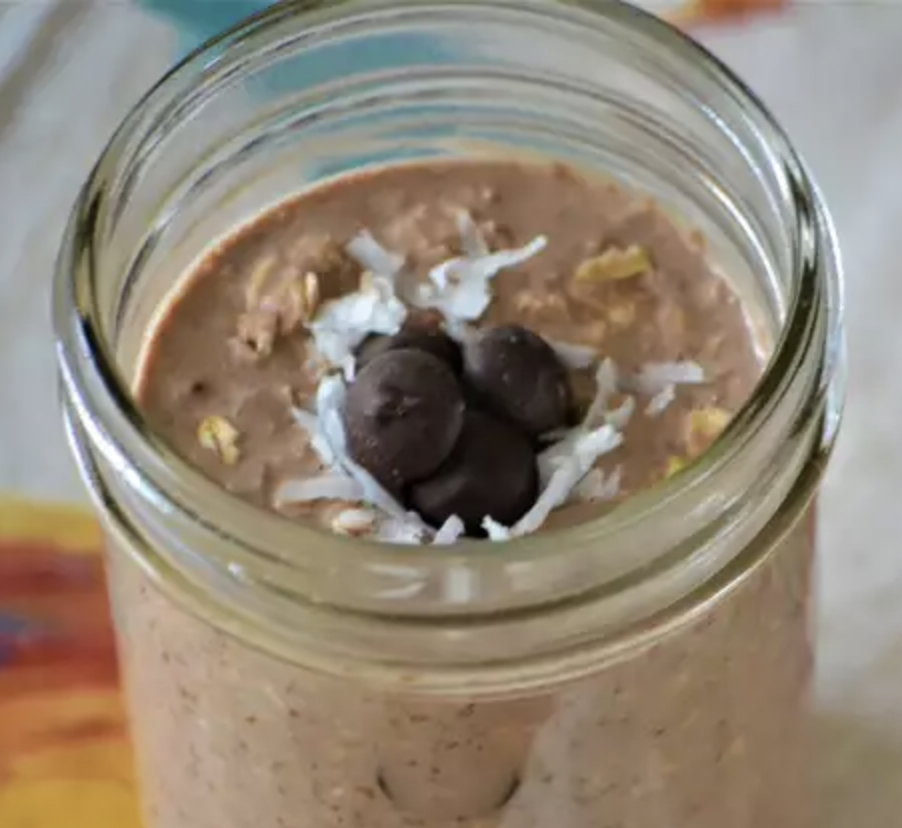

Coconut Coconut Milk Cake

Description
A yummy breakfast that is healthy but doesn't leave you feeling deprived, this no-cook oatmeal will be creamy by the morning time and makes breakfast prep time non-existent. Put all ingredients in a 12-ounce mason jar and vigorously shake to make preparation a breeze!
Ingredients
- 1 cup chocolate-flavored almond milk
- ¾ cup old-fashioned rolled oats (such a Quaker®)
- 1 tablespoon chia seeds
- 1 tablespoon packed shredded sweetened coconut
- 1 tablespoon maple syrup/li>
- 1 tablespoon unsweetened cocoa powder
- 1 splash vanilla extract
Instructions
- Mix almond milk, oats, chia seeds, coconut, maple syrup, cocoa powder, and vanilla extract in a 12-ounce mason jar. Cover and refrigerate, 8 hours to overnight. Stir and serve cold.
Back